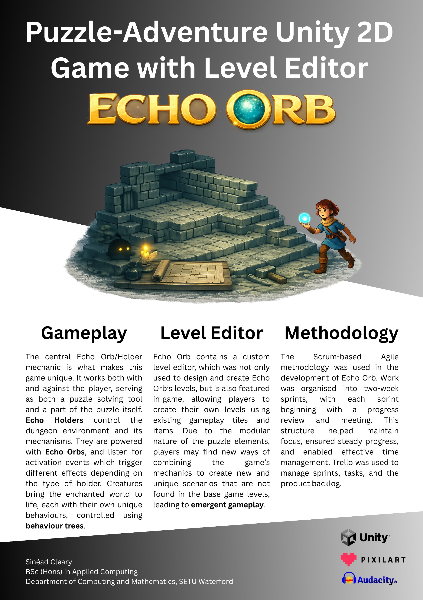

Sinéad Cleary - 2026
The central Echo Orb/Holder mechanic is what makes this game unique. It works both with and against the player, serving as both a puzzle solving tool, and a part of the puzzle itself. Echo Holders control the dungeon environment and its mechanisms. They are powered with Echo Orbs, and listen for activation events which trigger different effects depending on the type of holder. Creatures bring the enchanted world to life, each with their own unique behaviours, controlled using behaviour trees.
Echo Orb contains a custom level editor, which was not only used to design and create Echo Orb’s levels, but is also featured in-game, allowing players to create their own levels using existing gameplay tiles and items. Due to the modular nature of the puzzle elements, players may find new ways of combining the games mechanics to create new and unique scenarios that are not found in the base game levels, leading to emergent gameplay.
